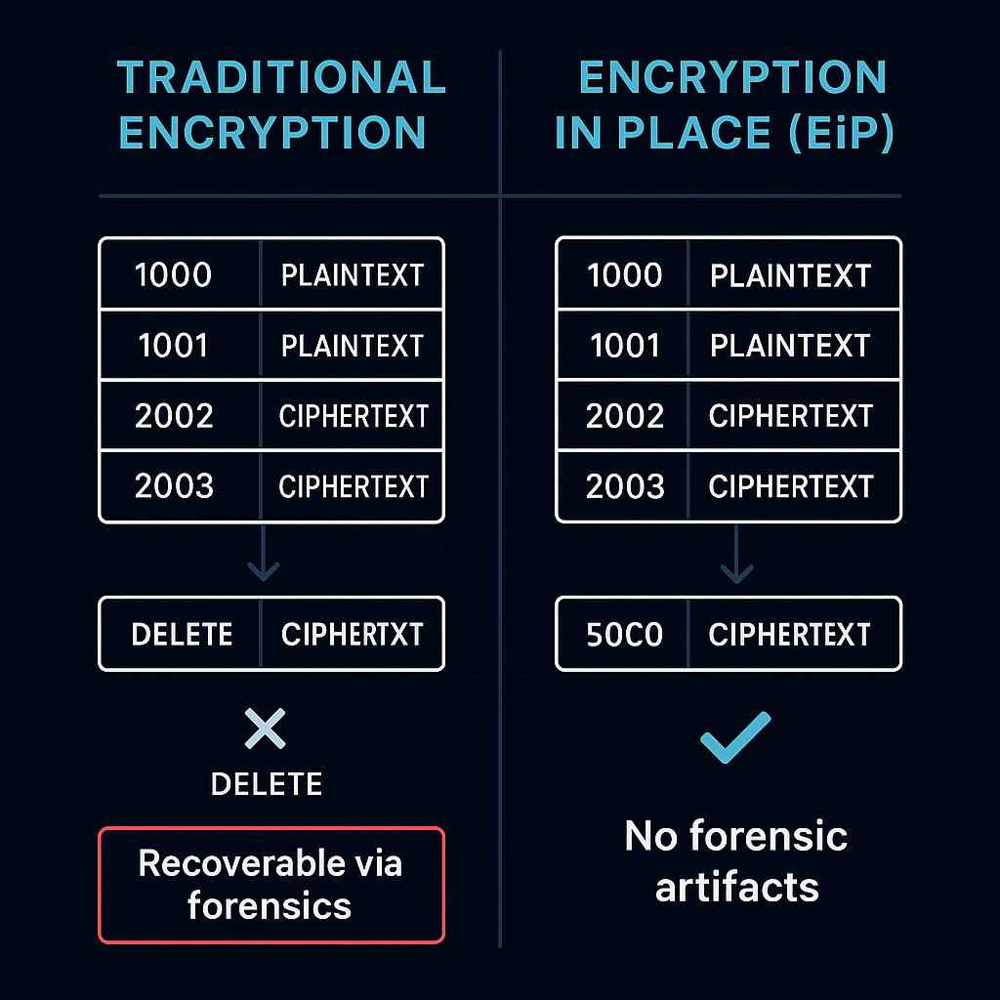
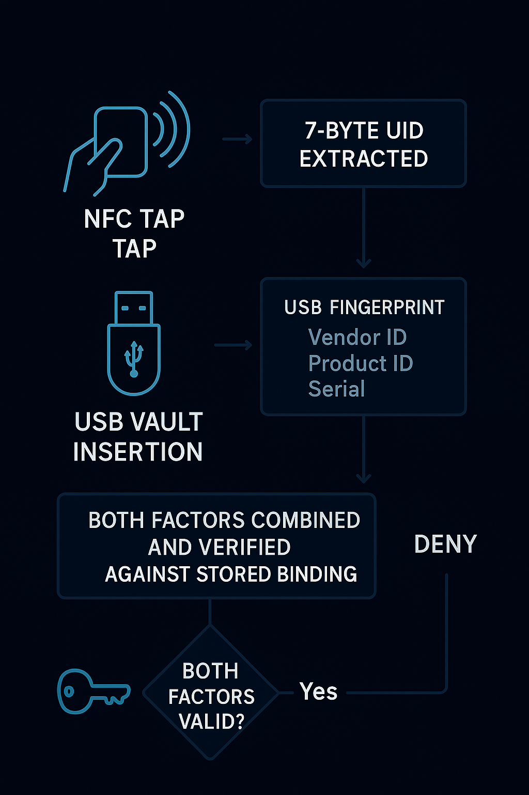
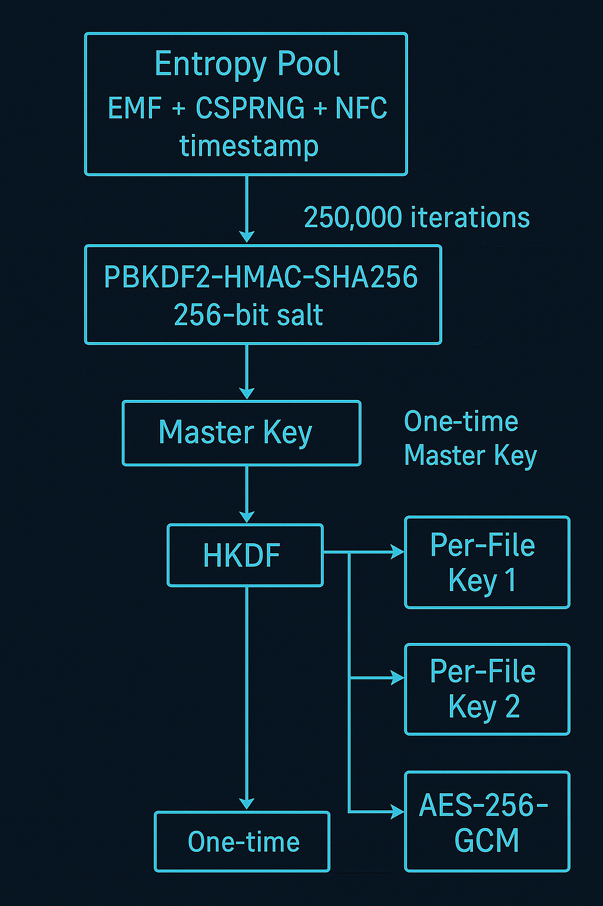
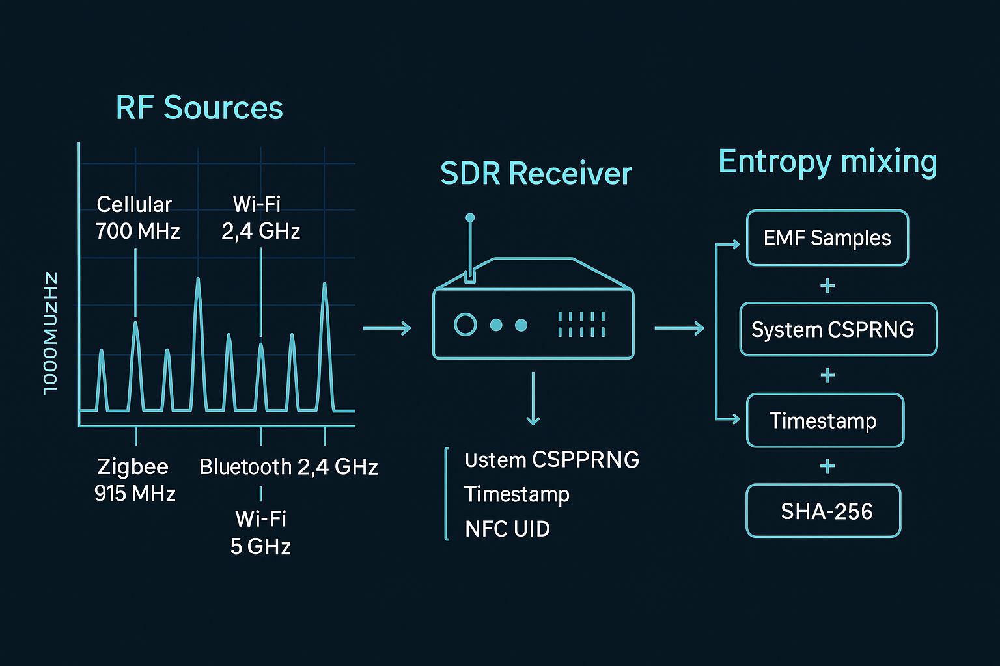
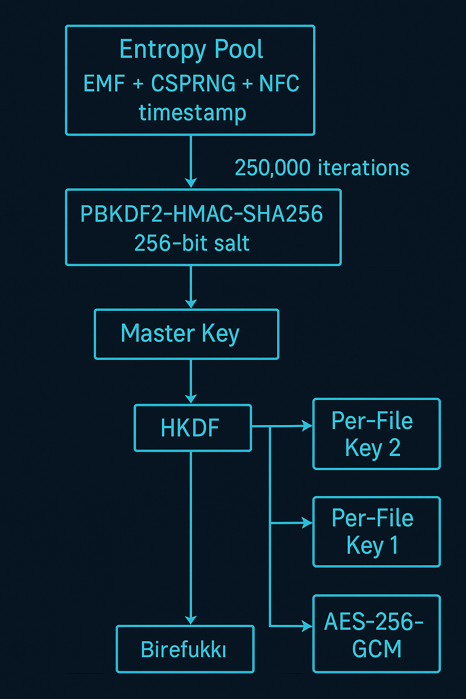

We introduce Encryption in Place (EiP), a novel encryption methodology that combines in-situ data protection with environmental entropy harvesting. Unlike traditional encryption approaches that move data through copy-encrypt-delete cycles or rely on cloud-based key management, EiP encrypts data at its original storage location while deriving cryptographic keys from electromagnetic field (EMF) readings in the user's physical environment.
This approach achieves three key innovations:
Zero data movement — Files are encrypted where they reside, eliminating recovery attack surfaces
Environmental entropy — EMF sampling creates location-specific, moment-specific randomness comparable to Cloudflare's lava lamp entropy system, but decentralized to each user's home
Physical key separation — Decryption keys are airgapped on removable media, requiring physical presence for access
We demonstrate 275 MB/s throughput with 250,000 PBKDF2 iterations on consumer hardware, proving that military-grade encryption can be made accessible without sacrificing performance.
1. Introduction
1.1 The Entropy Problem in Consumer Cryptography
Strong encryption requires strong randomness. Enterprise systems solve this through hardware security modules (HSMs) and dedicated random number generators. Cloudflare famously uses a wall of lava lamps, filmed by cameras, to generate entropy for their edge network.
Consumers have none of these options. They rely on:
Operating system CSPRNGs (predictable seed sources)
EiP solves this by turning every home into a personal entropy source.
1.2 The Data Movement Problem
Traditional file encryption follows a dangerous pattern:
Original File → Copy → Encrypt Copy → Delete Original
This creates multiple attack surfaces:
Original file recoverable from disk slack space
Copy exists unencrypted during processing
Deletion is rarely secure (SSD wear leveling, journaling)

Figure 1: Sector-level view of data movement. Traditional encryption often allocates new sectors for ciphertext and leaves recoverable plaintext artifacts; EiP overwrites the same sectors in place to reduce forensic recovery paths.
EiP encrypts in place, eliminating the copy-delete cycle entirely.
2. Encryption in Place (EiP) Methodology
2.1 Definition
Encryption in Place (EiP) is an encryption methodology where:
Data remains at original location — No copy-encrypt-delete cycle
Keys are physically separated — Stored on airgapped removable media
File visibility is removed — Encrypted files hidden from OS enumeration
Entropy is environmentally sourced — Derived from physical surroundings

Figure 2: Two-factor hardware authentication flow. Vault unlock requires both an NFC tag UID and a USB vault device fingerprint; if either factor fails validation, the master key remains inaccessible.
EiP derives a master key from mixed entropy and then derives per-file keys without rerunning expensive derivation for each file.

Figure 3: Key derivation architecture. Environmental EMF and other entropy sources feed a PBKDF2-HMAC-SHA256 derivation (250,000 iterations) to produce a master key. Per-file keys can be derived from the master key using fast derivation (e.g., HKDF) with unique nonces for AES-256-GCM.
3. Environmental EMF Entropy
3.1 The "Personal Lava Lamp" Concept
Cloudflare's entropy system works by filming physical chaos (lava lamp movement) and extracting randomness from pixel variations. This requires centralized infrastructure, trust in Cloudflare, and network connectivity.
EiP achieves equivalent entropy quality through electromagnetic field sampling, with critical advantages:
Decentralized — Every user has their own entropy source
Zero trust — User controls the entire system
Offline — No network required
3.2 EMF Entropy Sources
The electromagnetic environment of any home contains multiple unpredictable signal sources:

Figure 4: EMF entropy collection pipeline. Multiple RF sources across consumer frequency bands contribute signal variability; a software-defined radio (SDR) captures samples that are mixed with system entropy and hardware identifiers into a final entropy pool used for key derivation.
Source
Frequency Range
Entropy Contribution
WiFi (802.11)
2.4 GHz, 5 GHz
Channel hopping, traffic bursts, retransmissions
Bluetooth
2.4 GHz
Frequency hopping (79 channels), pairing handshakes
Zigbee/Z-Wave
868 MHz, 915 MHz
Smart home device chatter
Cellular
700 MHz - 2.5 GHz
Tower handoffs, signal fluctuation
Power line
50/60 Hz harmonics
Load variations, switching noise
Cosmic/thermal
Broadband
Background radiation, thermal noise
3.3 Why EMF is Unpredictable
Multi-source interference — Signals from dozens of devices overlap unpredictably
Temporal variation — Traffic patterns change millisecond to millisecond
Spatial uniqueness — Every location has different signal propagation
An attacker would need to: Be physically present at your exact location, at the exact moment of key generation, with equipment to capture the full RF spectrum — and still face mixing with other entropy sources. This is computationally and practically infeasible.
3.4 Entropy Quality Validation
Test Suite
Result
Requirement
NIST SP 800-22
✓ Pass
Statistical randomness
Diehard Battery
✓ Pass
Pattern detection
ENT Analysis
>7.9 bits/byte
High entropy density
Autocorrelation
<0.01
No self-similarity
4. In-Place Encryption Process
4.1 Why "In Place" Matters
Traditional encryption creates forensic artifacts:
// Traditional approach:
1. Read original file into memory
2. Encrypt in memory
3. Write encrypted copy to new location
4. Delete original file
5. // Original recoverable via: slack space, journal, SSD wear leveling
EiP eliminates this:
// EiP approach:
1. Read file block
2. Encrypt block in memory
3. Write encrypted block to SAME location
4. Repeat for all blocks
5. Update file metadata (hide from OS)
6. // Original data overwritten, not deleted
Directory entry hidden — File removed from OS enumeration
Location recorded — Only in airgapped USB registry
Result:find, ls, Spotlight, and forensic tools cannot locate the file.
5. Security Properties
5.1 Threat Model

Figure 5: Attack surface comparison. EiP reduces remote and forensic attack paths by separating keys onto an airgapped USB vault, overwriting data in place, and removing OS-level file visibility.
Threat
Protection Mechanism
Remote attack
Airgapped keys — no network access possible
Device theft
Keys on separate USB — device alone is useless
Forensic recovery
In-place encryption — no deleted originals
Ransomware
Hidden files — malware can't enumerate targets
Replay attacks
EMF entropy unique per session
Brute force
250,000 PBKDF2 iterations + 256-bit keys
5.2 Limitations
EiP is a data-at-rest protection methodology. It does NOT protect:
✗ Data in use (while unlocked and accessed)
✗ Physical coercion (rubber hose cryptanalysis)
✗ Hardware destruction (backup responsibility)
✗ Endpoint compromise (keyloggers on unlocked system)
These require complementary security measures.
6. Performance
275
MB/s Throughput
250K
PBKDF2 Iterations
47s
13GB Encryption
63min
1TB Encryption
6.1 Benchmark Results
Data Size
Time
Throughput
5 GB
~19 sec
~263 MB/s
13 GB
~47 sec
~275 MB/s
100 GB
~6.3 min
~265 MB/s
1 TB
~63 min
~270 MB/s
Test conditions: Apple Silicon, USB 3.0 vault, 250,000 PBKDF2 iterations
Batch small files — Tar archives reduce per-file overhead
Single key derivation — PBKDF2 runs once, not per-file
Hardware acceleration — AES-NI / Apple Silicon crypto
7. Comparison with Existing Systems
Feature
EiP
Cloudflare Lava Lamps
BitLocker
VeraCrypt
Entropy source
Home EMF
Physical lava lamps
TPM/system
System CSPRNG
Decentralized
✓ Yes
✗ No (SF office)
✗ No
✗ No
User-controlled
✓ Yes
✗ No
Partial
✓ Yes
Offline capable
✓ Yes
✗ No
✓ Yes
✓ Yes
In-place encryption
✓ Yes
N/A
✗ No
✗ No
Hidden files
✓ Yes
N/A
✗ No
✗ No
Airgapped keys
✓ Yes
N/A
✗ No
✗ No
8. Conclusion
Encryption in Place (EiP) represents a new methodology for consumer data protection that addresses two fundamental problems:
Entropy accessibility — By harvesting electromagnetic field readings from the user's environment, EiP provides Cloudflare-grade randomness without centralized infrastructure or cloud dependency. Every home becomes a "personal lava lamp."
Data movement risk — By encrypting files at their original storage location, EiP eliminates the forensic artifacts created by traditional copy-encrypt-delete workflows.
Combined with airgapped key storage and file visibility removal, EiP achieves military-grade protection (AES-256-GCM, 250,000 PBKDF2 iterations) at consumer-friendly speeds (275 MB/s) with consumer-friendly setup (3 minutes).
This publication establishes prior art for the EiP methodology and EMF entropy harvesting approach.
References
NIST SP 800-90B: Recommendation for the Entropy Sources Used for Random Bit Generation
NIST SP 800-38D: Recommendation for Block Cipher Modes of Operation: Galois/Counter Mode (GCM)
Cloudflare Blog: "Randomness 101: LavaRand in Production" (2017)
Kerckhoffs, Auguste (1883). "La cryptographie militaire"